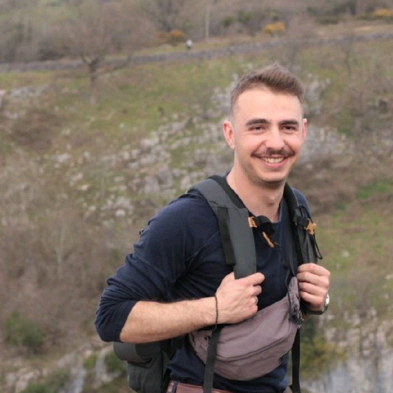

Matthieu Diener
Summary
My academic foundation in mechatronics has equipped me with a multidisciplinary understanding of mechanics, electronics, and software. I trained and graduated in France.
Education
Masters Degree in Mechatronics Engineering
SIGMA - Clermont-Ferrand (2017-2020)
- Graduated as an Engineer in Advanced Mechanical Engineering specialised in Mechatronics and Robotics with international experience (Spain, Norway)
- Acquired Strong foundations in Mechanical and Electrical Engineering
Work Experience
Installation Manager
Bearbox International (Jan 2024-May 2025)
Responsible for the projects management and technical ongoing within the french, belgian, and british client base. Bearbox is a tech british company that designs produces installs and maintain access control equipment tailored for self-storage.
- Planning and Organisation team management
- On site surveys troubleshoots and installs around Europe of electrical security equipment
- Online support
- Full Project Management for French based clients
Commissioning and Support Field Engineer
SOLYSTIC (Nov 2021-Sept 2023)
Responsible for the commissioning of new SOLYSTIC parcel sorting special machinery from the installation phase to the acceptance tests
- Deployement of machines all over the UK
- Planning and management of the commissioning phases up to live production
- Mechanical, electrical and software maintenance, installation and troubleshooting
- Analyses tests and improvements of machine performances
- Extensive hours and travels within 12 different machine location accross England, Wales, Scotland, and Northern Ireland
Skills
- Automation Systems and Electrical Equipment Installation and Maintenance
- Fault Analysis and Troubelshooting
- Planning management
- Client-facing ease in English and French
- Python intermediary level coding skills
Contact Me